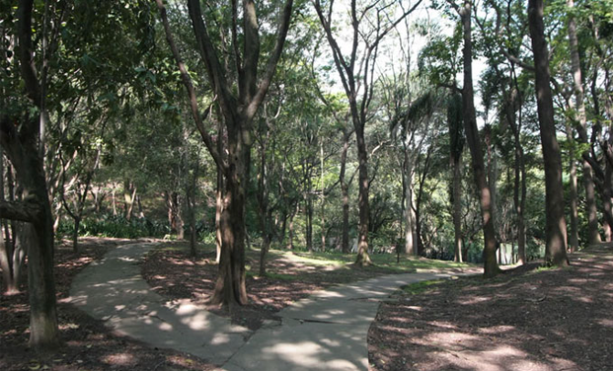
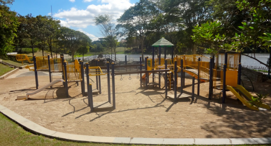
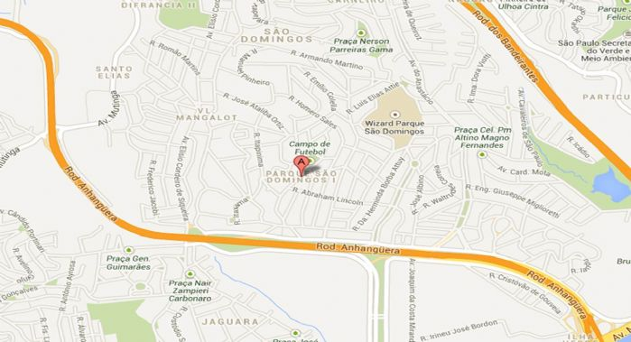
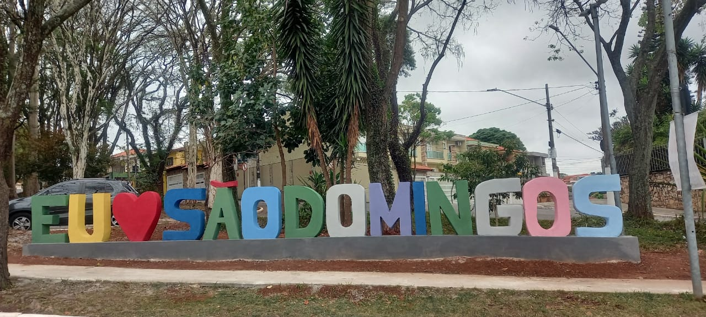
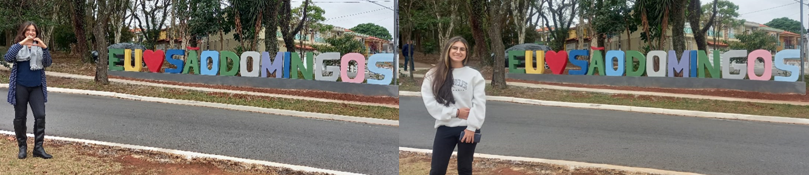

Página Inicial
História
Comércio & Educação
Parques
Formulários
Bem-vindo ao...
Parque São Domingos
O bairro verde de grande tranquilidade e paz
 
Comério
Placa
Contato
Informações demográficas: ㅤㅤㅤㅤㅤ
Área: 500.000 m²
Inauguração: 1950-1960
População: 3.027
Subprefeitura: Pirituba
Localização - Zona Norte:
ir

Por que o bairro é conhecido?
Para conhecer um pouco mais sobre os DESTAQUES do bairro, clique
AQUI
☻♥☻ Poste a sua foto na placa utilizando a
#euamosãodomingos
☻♥☻

